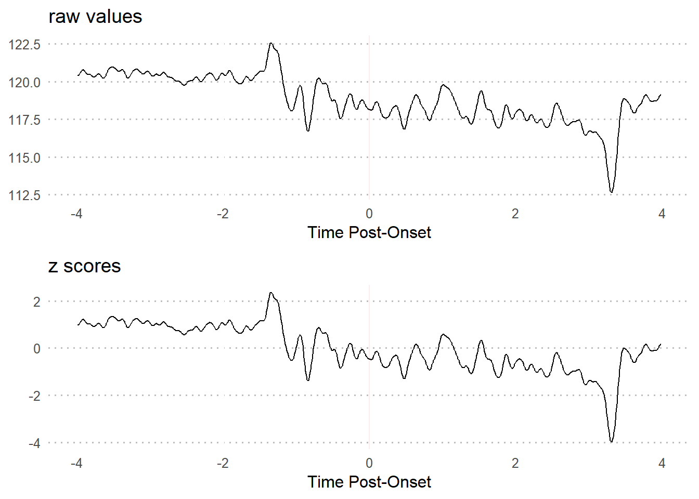
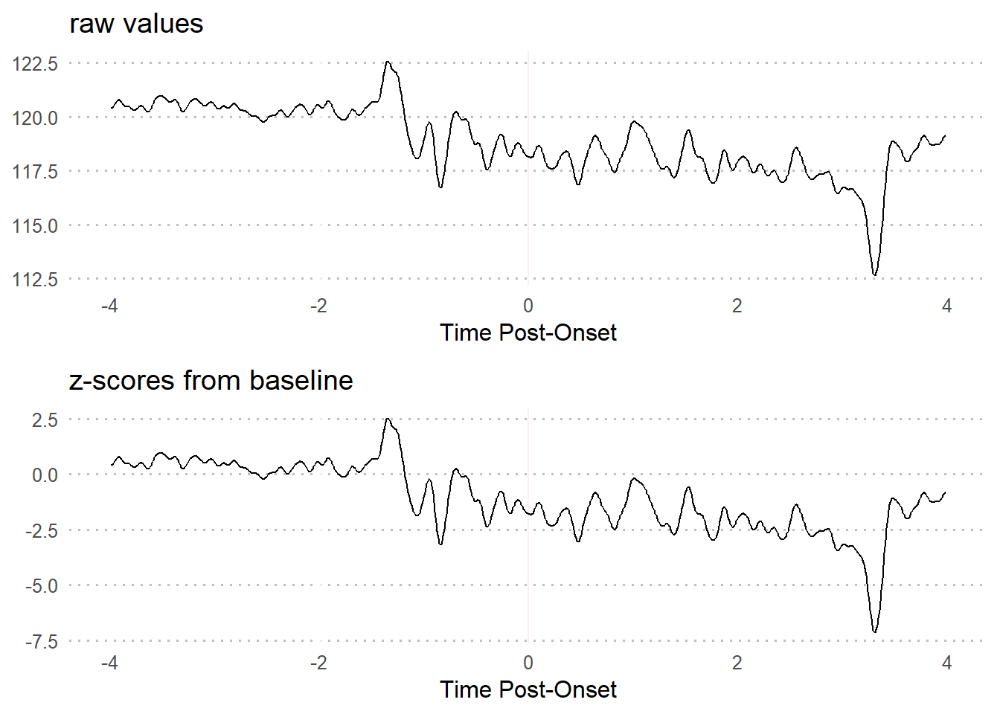
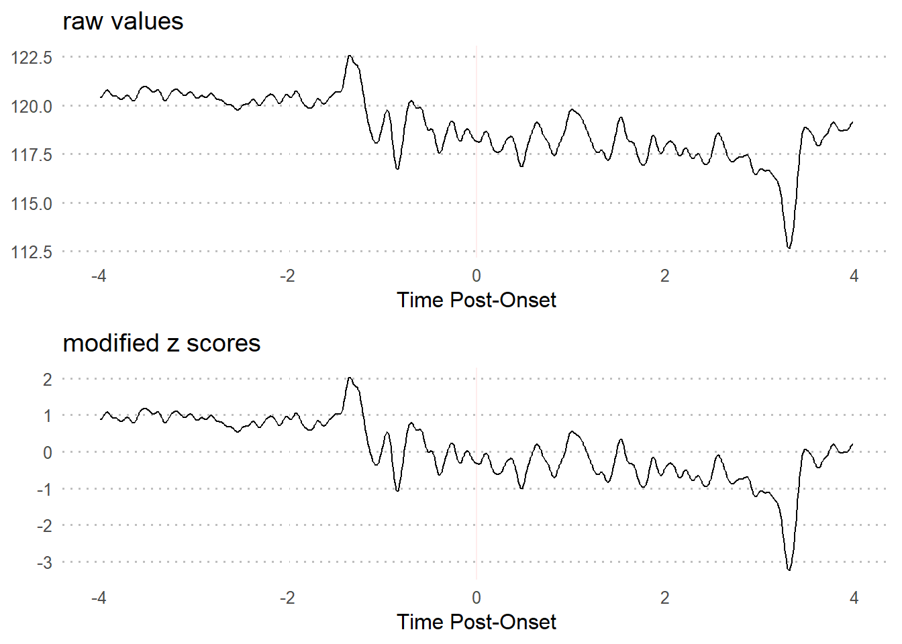
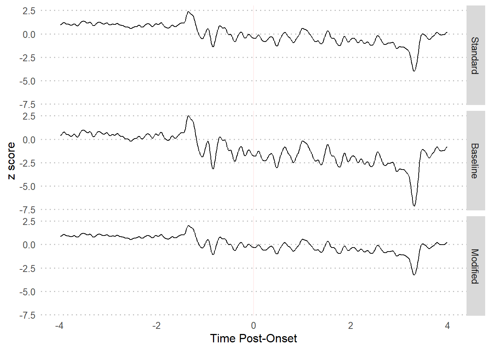
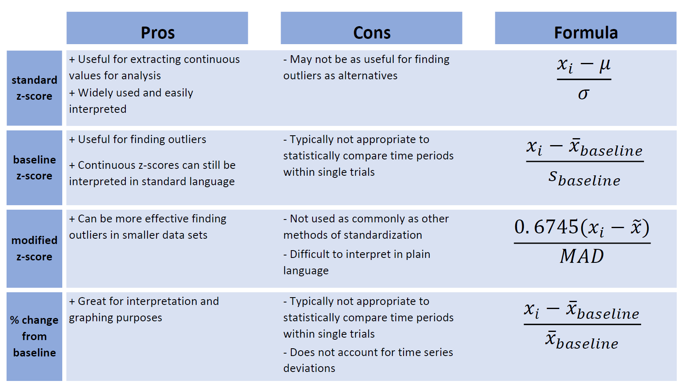

Chapter 3 Standardizing Data
3.1 Reasons to standardize data
There are a few reasons to standardize your data before exploring your data.
1. Signal differs between subjects
- Regardless of the specific technologies used, there is almost always differences in signal strength for each subject
2. Signal differs between trials
- The strength of recording signal tends to decay over time
3. Utilizing baseline values
- Using transformations such as percent change allows you to center the data at an objective value
- After centering your trial and post-trial data, the data is interpreted as relative to baseline values
- The baseline period is typically assumed to be a “resting” period prior to exposure to the experimental manipulation. This means that using standardization methods (particularly z-scores) also takes baseline deviations into consideration.
3.2 Methods of standardization
A little alteration in how we compute z-scores can make a significant difference.
3.2.1 z-scores
Standard z-score transformations work the same way with time series data as with any other. The formula:
- centers every value (x) at the mean of the full time series (mu)
- divides it by the standard deviation of the full time series (sigma).
\[\begin{gather*} z_{i} = \frac{x_{i}-\mu}{\sigma} \end{gather*}\] \[\begin{align*} \text{where...} \\ \mu &= \text{mean of population,} \\ \sigma &= \text{standard deviation of population} \\ \end{align*}\]
This results in the same time series in terms of standard deviations from the mean, all in the context of the full time series.
3.2.1.1 R Code
3.2.1.2 Visualization

3.2.2 baseline z-scores
Using the pre-event baseline period as the input values for computing z-scores can be useful in revealing changes in neural activity that you may not find by just comparing pre-trial and trial periods. This is in part because baseline periods tend to have relatively low variability.
As you can see from the formula, a lower standard deviation will increase positive values and decrease negative values - thus making changes in neural activity more apparent.
\[\begin{gather*} baseline \ z_{i} = \frac{x_{i}-\bar{x}_{baseline}}{s_{baseline}} \end{gather*}\] \[\begin{align*} \text{where...} \\ \bar{x}_{baseline} &= \text{mean of values from baseline period,} \\ {s}_{baseline} &= \text{standard deviation of values from baseline period} \\ \end{align*}\]
This results in a time series interpreted in terms of standard deviations and mean during the baseline period. Baseline z-scores are conceptually justifiable because the standard deviation is then the number of deviations from the mean when a subject is at rest. The values outside of the baseline period will be different using this version, but not within the baseline period.
3.2.2.1 R Code
3.2.2.2 Visualization

3.2.3 modified z scores
Waveform data fluctuates naturally. But in the event of a change in activity due to external stimuli, signal variation tends to rapidly increase and/or decrease and becomes unruly.
\[\begin{gather*} modified \ z_{i} = \frac{0.6745(x_{i}-\widetilde{x})}{MAD} \end{gather*}\] \[\begin{align*} \text{where...} \\ \widetilde{x} &= \text{sample median,} \\ {MAD} &= \text{median absolute deviation} \end{align*}\]
3.2.3.2 Visualization

3.3 z-score comparison
3.3.1 Visualization

3.3.2 Summary table

3.4 Examples
3.4.1 Example 1
Standardize trial 8 so that the units are in terms of standard deviations from the mean of the full time series.
3.4.2 Example 2
Standardize trial 8 so that the units are in terms of standard deviations from the mean of the pre-event period.
We can do this manually for each trial.
### Manual
baseline.vals <- df$Trial8[df$Time >= -4 & df$Time <= 0] # extract baseline values
baseline.z <- z_score(xvals = df$Trial8,
mu = mean(baseline.vals), # mean of baseline
sigma = sd(baseline.vals), # sd of baseline
z.type = 'standard')Or we can use the baseline_transform wrapper.
baseline.zdf <- baseline_transform(dataframe = df,
trials = 8,
baseline.times = c(-4, 0),
type = 'z_standard')Both methods will result in the same values.
## [1] TRUE3.4.3 Example 3
Standardize trial 8 so that the units are in terms of deviations from the median of the full time series.
3.4.4 Example 4
Convert trial 8 so that the units are in terms of percent change from the mean of the pre-event period.
We can do this manually for each trial.
### Manual
baseline.vals <- df$Trial8[df$Time >= -4 & df$Time <= 0] # extract baseline values
perc.change <- percent_change(xvals = df$Trial8,
base.val = mean(baseline.vals))Or we can use the baseline_transform wrapper.
perc.changedf <- baseline_transform(dataframe = df,
trials = 8,
baseline.times = c(-4, 0),
type = 'percent_change')Both methods will result in the same values.
## [1] TRUE